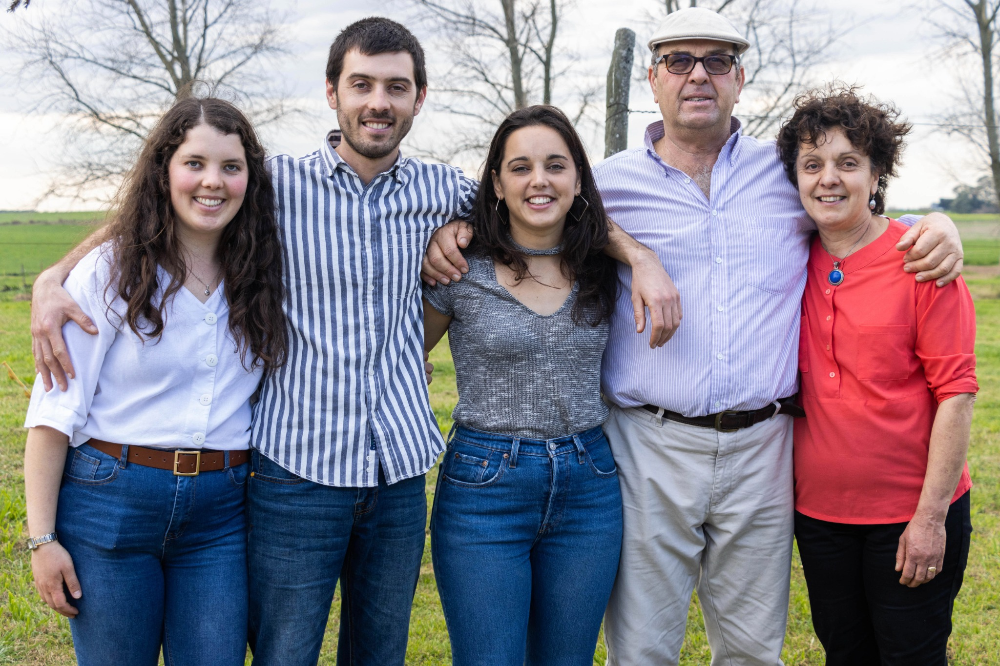
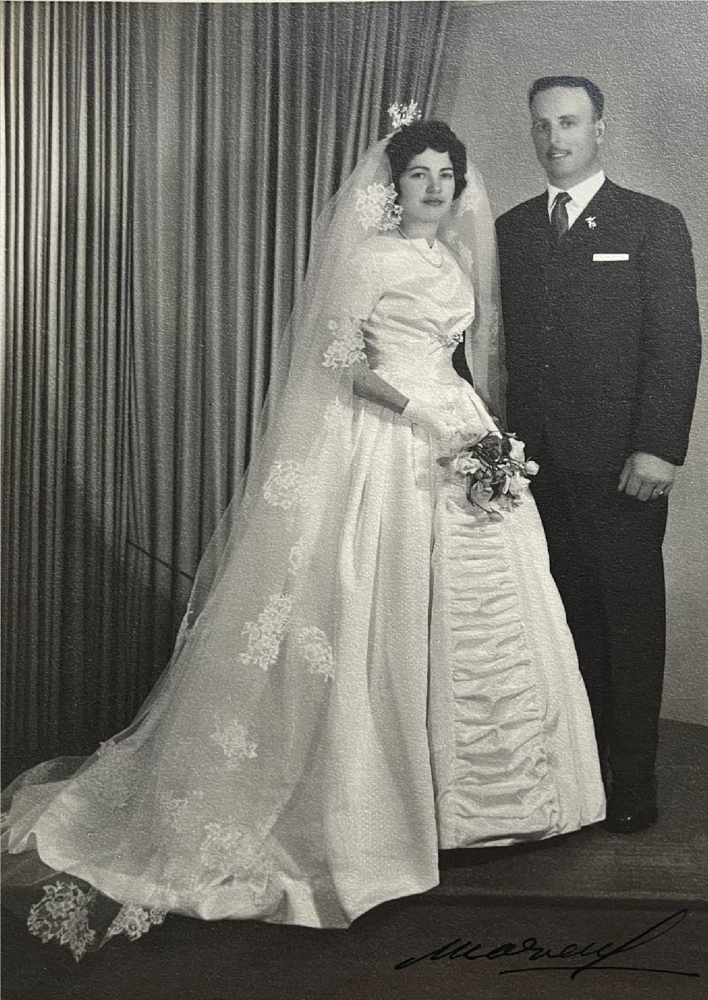
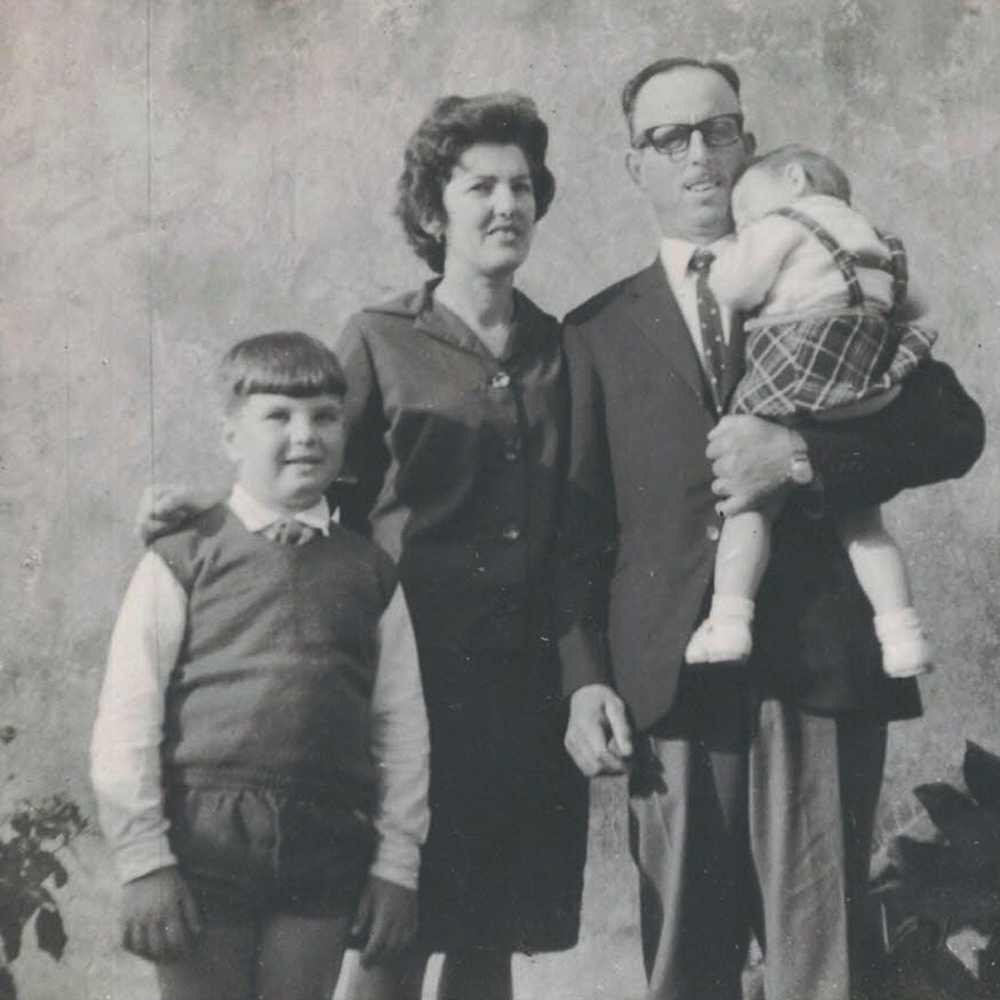
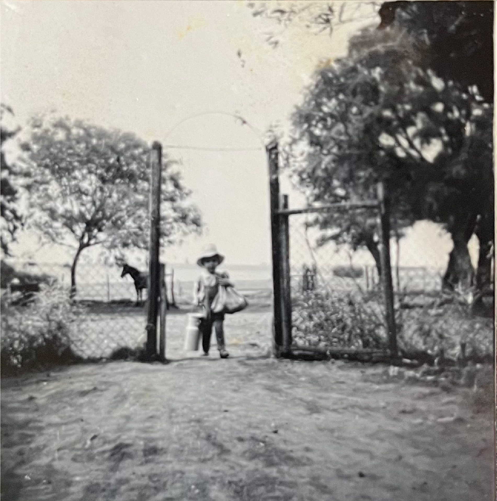
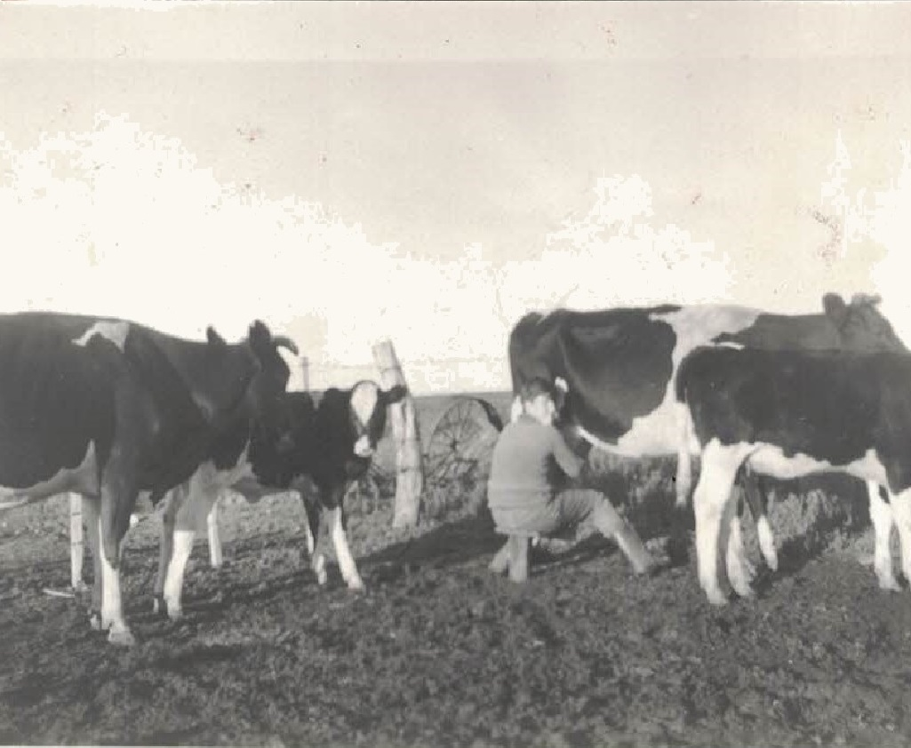
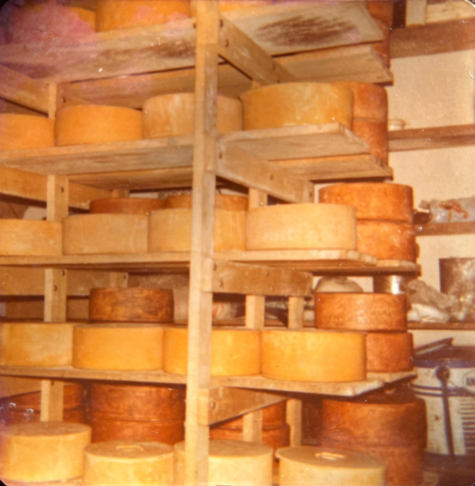
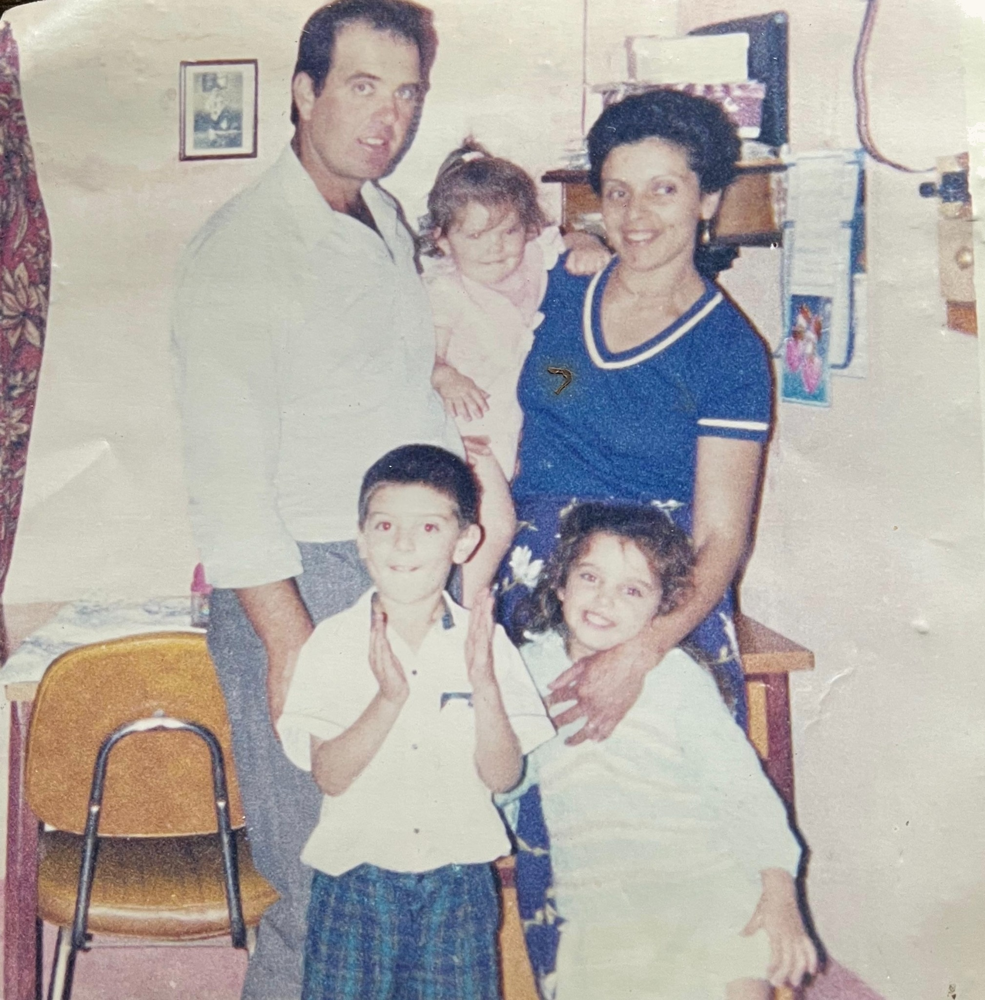
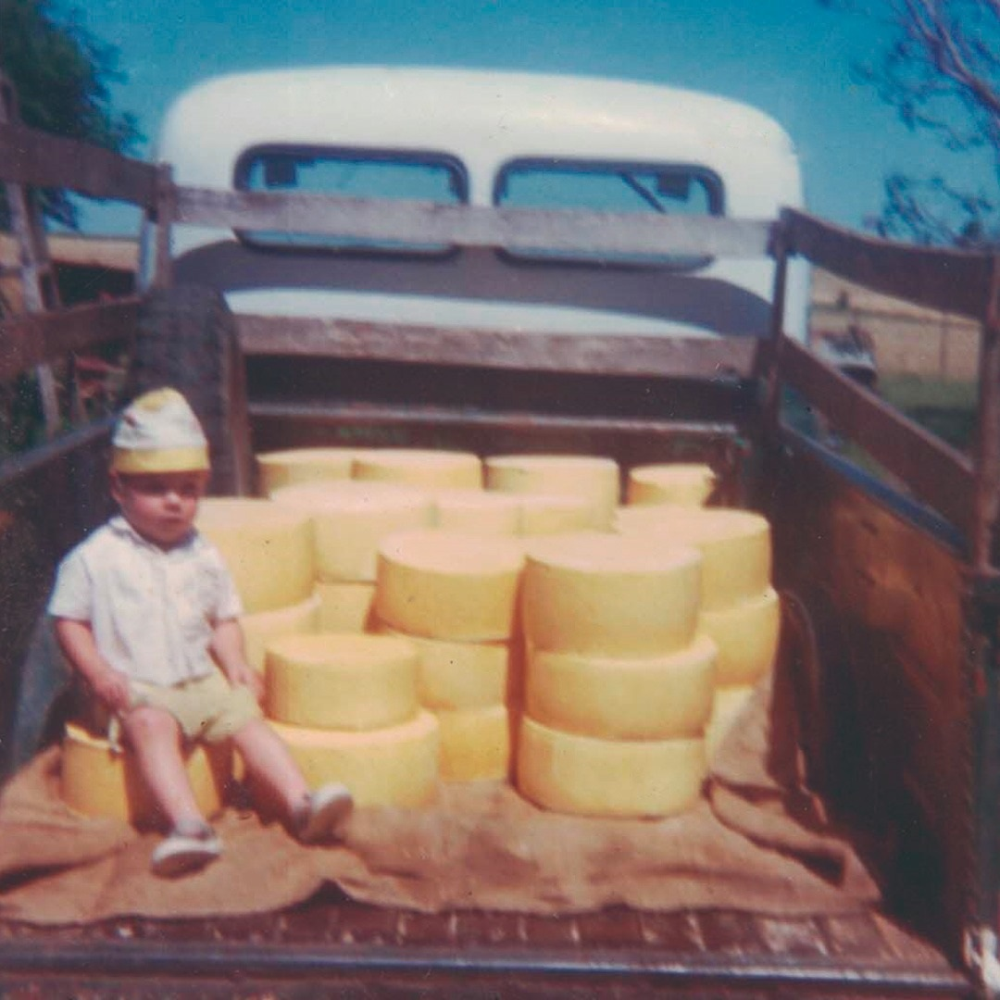
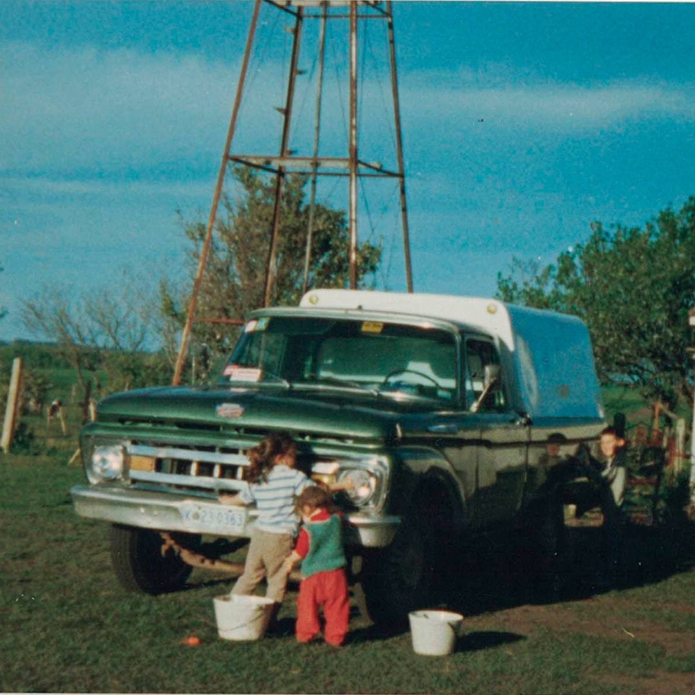

NUESTRA HISTORIA
Una tradición que
atraviesa generaciones
Nuestra historia comienza en 1973, cuando el padre y la madre de Néstor se establecieron en el predio de Cañada Nieto donde hoy se encuentra nuestra quesería. En aquellos primeros años, la familia se dedicaba a la agricultura y la ganadería lechera: las vacas se ordeñaban a mano y, en un pequeño fogón, se elaboraban queso y crema de manera artesanal.
A lo largo de los años, la familia incursionó en distintas actividades productivas, desde la agricultura y la producción de lanares hasta la avicultura. Pero hubo algo que nunca dejó de estar presente: la elaboración de queso y la búsqueda constante por mejorar su calidad.
En 1988, Néstor y Corina se casaron y comenzaron a construir juntos el proyecto familiar. Tres años después, en 1991, la elaboración de quesos pasó a realizarse de forma ininterrumpida, marcando el comienzo de lo que hoy conocemos como Rostán Quesos Artesanales. Con la llegada de Ramiro, Vanesa y Romina, la familia creció y con ella también la quesería.
Más de tres décadas después, seguimos elaborando nuestros quesos en Cañada Nieto, Soriano, combinando tradición, experiencia e innovación. A lo largo del camino, ese trabajo ha sido reconocido con numerosos premios nacionales e internacionales, pero nuestra esencia sigue siendo la misma: una empresa familiar profundamente vinculada a su tierra y al oficio de hacer queso.
Cada queso Rostán lleva consigo una parte de nuestra historia: el trabajo de generaciones, el sabor de nuestra tierra y la pasión por hacer las cosas bien.








